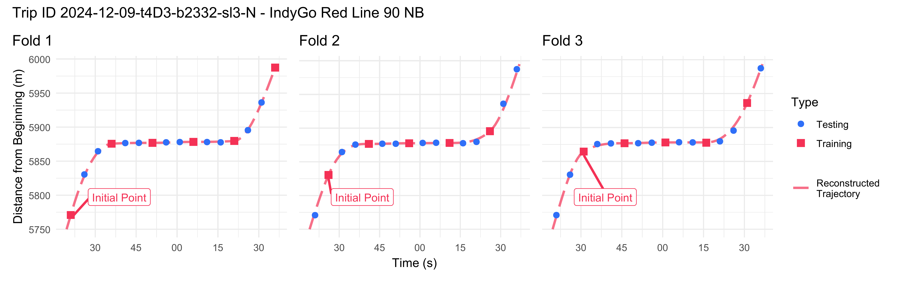
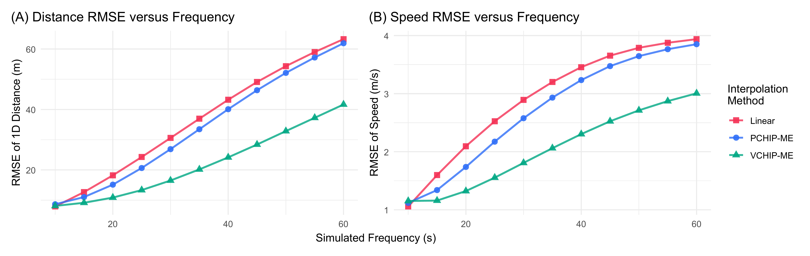
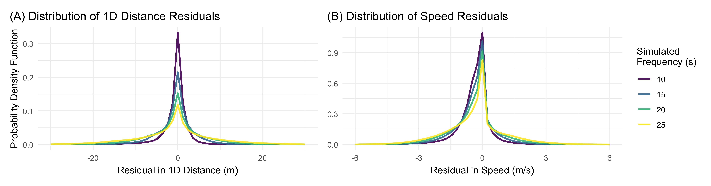
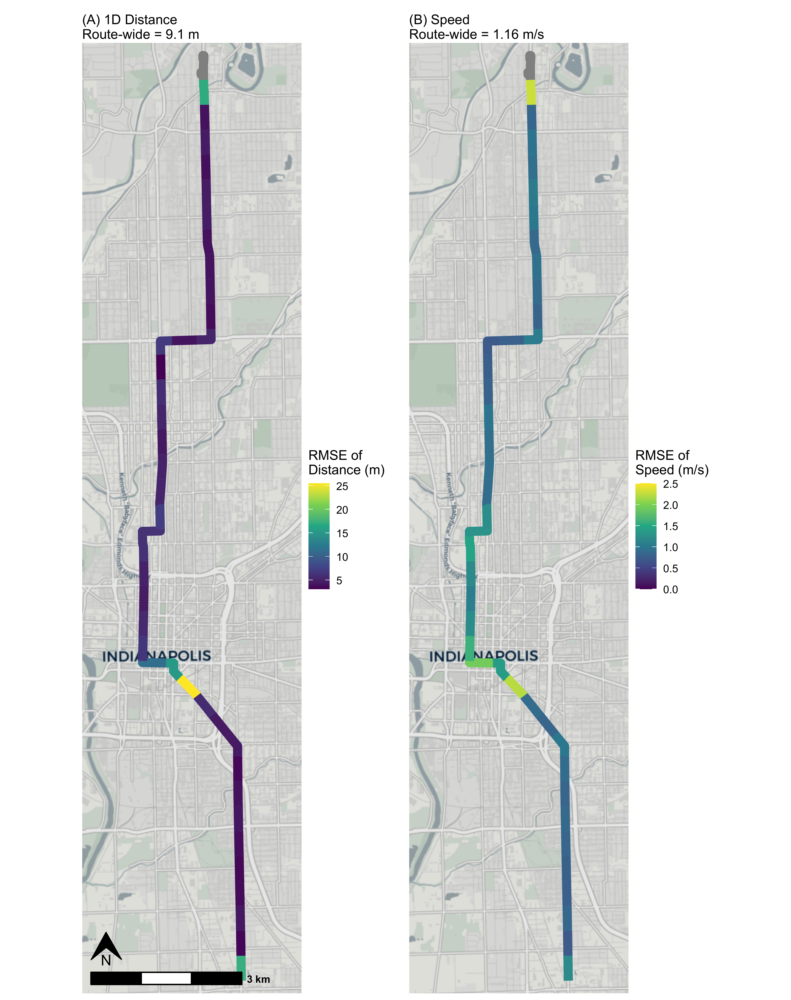

Evaluating the Robustness of Reconstructed Trajectories
Source:vignettes/articles/paper_robustness.Rmd
paper_robustness.RmdIntroduction
This vignette contains all code used to quantify and visualize the
errors in trajectories reconstructed using transittraj, as
presented and discussed in our paper. Our goals here
are threefold: first, to give users a rough sense of the magnitude of
error in reconstructed position and speed estimates; second, to evaluate
the robustness of trajectories to low polling frequencies; and third, to
evaluate how the different interpolation methods supported by
transittraj compare. While we do not have permission to
share the data used in this test, we welcome users to adapt the code the
replicate this evaluation using their own data.
This vignette is intended to complement our paper. Check out the full paper for a more thorough discussion of this methodology.
Data
Let’s begin by loading the libraries we’ll be using:
# Data
library(transittraj)
library(tidyverse)
# Spatial
library(sf)
library(stplanr)
# Plotting
library(ggspatial)
library(patchwork)
library(marquee)We perform this robustness check on AVL data from IndyGo’s northbound
Red Line BRT service. We accessed IndyGo’s AVL data from their Swiftly
endpoint, after which it was reformatted to meet the TIDES standards
required by transittraj and stored in the dataframe
avl_df. We do not have permission to share this dataset,
and so have pre-loaded it into our RStudio session before running this
vignette. IndyGo’s buses had AVL polling frequencies ranging from 5 to
15 seconds; we kept only trips with 5-second polling frequencies for
this study.
## [1] "1707095 observations"## [1] "3256 trips"
# Time range
paste("Time range: ", as.POSIXct(min(avl_df$event_timestamp), tz = "America/New_York"),
" - to - ", as.POSIXct(max(avl_df$event_timestamp), tz = "America/New_York"),
sep = "")## [1] "Time range: 2024-11-01 00:00:01 - to - 2024-12-31 23:58:58"The second piece of data required is the northbound Red Line’s
alignment. This was accessed through IndyGo’s GTFS
shapes.txt file, and is stored in the sf
object route_geom.
print(route_geom)## Simple feature collection with 1 feature and 1 field
## Geometry type: MULTILINESTRING
## Dimension: XY
## Bounding box: xmin: 571795.1 ymin: 4395912 xmax: 573767.5 ymax: 4414347
## Projected CRS: WGS 84 / UTM zone 16N
## # A tibble: 1 × 2
## shape_id geometry
## <chr> <MULTILINESTRING [m]>
## 1 12057_shp ((573767.5 4395912, 573767 4395940, 573766.6 4395966, 573764.6 4396102, 573764.1 ...Methods
Cross-Validation Approach
Using a dataset with 5-second AVL pings, we evaluate the proposed workflow on simulated polling frequencies from 5 to 60 seconds, in 5-second intervals. For each simulated frequency, we select a training dataset by keeping every points. All remaining points are used as the testing dataset. This is repeated times, shifting the training dataset by one point each time. An example for seconds, with folds, is shown in the figure below.

For each CV fold, we apply the same cleaning methodology discussed in the the AVL cleaning vignette. To understand the relative performance of the different trajectory reconstruction methods, we then apply three separate interpolation methods: first, the recommended VCHIP-ME cubic splines; second, PCHIP-ME, cubic splines with monotonic enforcement but without observed bus speeds; and third, simple linear interpolation without monotonic enforcement and without knowledge of observed bus speeds.
Once each trajectory was fit to the training dataset, we calculate two error terms relative to the raw testing dataset: first, the one-dimensional distance along the route between each test point and the fit trajectory; and second, the difference in speed between each test point and the trajectory. We then calculate the root mean square error (RMSE) of each of each error type across all folds of each trajectory type and simulated frequency. Finally, to identify spatial patterns in error, we group point errors into 500-meter segments along the route, and calculate the RMSE within each zone.
Initial Cleaning & Filtering
Throughout this robustness check, we aim to exclude points which are off-route, in an overlapped sub-trip, or a trip tail. We also only wish to keep trips with sufficient data and with a 5-second polling frequency. To identify the appropriate points & trips, we’ll apply the cleaning methodology from through step 6:
# Step 1/2
s1 <- get_linear_distances(avl_df = avl_df,
shape_geometry = route_geom,
clip_buffer = 50,
project_crs = 32616) %>%
filter(distance < 20500)
# Step 3
s3 <- clean_overlapping_subtrips(distance_df = s1,
check_operator = TRUE,
remove_single_observations = TRUE) %>%
mutate(location_ping_id = as.character(location_ping_id))
# Step 4
s4 <- clean_jumps(distance_df = s3)
s4_remov <- clean_jumps(distance_df = s3,
return_removals = TRUE) %>%
pull(location_ping_id)
# Step 5
s5 <- trim_trips(distance_df = s4)## Warning: Trips found with maximum at or before minimum point -- potential wrong direction.
## Removing the following: 2024-11-22-t325-b2331-sl3-N, 2024-11-25-t803-b2335-sl3-N, 2024-12-05-t60E-b2334-sl3-N, 2024-12-12-t84D-b233C-sl3-N, 2024-12-31-t5-b233D-sl3-N
# Step 6
s6 <- clean_incomplete_trips(distance_df = s5,
min_trip_distance = 500,
min_trip_duration = 90,
max_distance_gap = 800)Now we can find the list of pings (identified by their
location_ping_id) and trips (identified by their unique
trip_id_performed) to keep in the initial cross-validation
dataset. We will keep pings not off-route, not in a trip tail, and not
in an overlapped subtrip. We will retain outliers, as these will be
identified in each fold of the cross-validation process.
keep_pings <- c(s6$location_ping_id,
s4_remov)Next, we’ll find the trips we want to keep. After filtering the dataset to the pings we’re keeping, we’ll retain trips with at least one remaining observations and a polling frequency below 7 seconds (corresponding to an average polling frequency of 5 seconds, with random gaps).
avl_summ <- avl_df %>%
filter(location_ping_id %in% keep_pings) %>%
group_by(trip_id_performed) %>%
summarize(t_min = min(event_timestamp),
t_max = max(event_timestamp),
t = as.numeric(t_max) - as.numeric(t_min),
n_obs = n(),
freq = t / n_obs)
keep_trips <- avl_summ %>%
filter((n_obs > 1) & (freq < 7)) %>%
pull(trip_id_performed)
paste(length(keep_trips), " trips",
sep = "")## [1] "1162 trips"In total, the CV robustness check will evaluate 1,162 trips. Using the trips and points we wish to retain, we’ll finalize our cleaned, initial dataset.
base_df <- s3 %>%
filter((trip_id_performed %in% keep_trips) &
(location_ping_id %in% keep_pings)) %>%
select(event_timestamp, trip_id_performed, distance, speed, location_ping_id)
base_sf <- avl_df %>%
filter((trip_id_performed %in% keep_trips) &
(location_ping_id %in% keep_pings)) %>%
st_as_sf(coords = c("longitude", "latitude"),
crs = 4326) %>%
st_transform(crs = 32616) %>%
select(trip_id_performed, event_timestamp, location_ping_id)Implementation
With our base dataset, we can perform the cross-validation. We’ll define three primary functions to perform the process:
A fold function
cv_fold(), to create a testing and training dataset;A cleaning function
clean_avl(), to implement the data cleaning workflow on the training dataset;And an error calculation function
traj_err(), to calculate the two residual terms (1D distance and speed) between the testing dataset and fit trajectories.
Below we begin by defining the folding function. Given the raw
dataset’s 5-second frequency, this takes in a simulated frequency
(test_freq) and iteration number (offset),
returning a list containing the testing and training dataset at that
frequency and offset.
base_freq <- 5 # avg ping frequency
cv_fold <- function(test_freq, offset) {
keep_mod <- test_freq / base_freq
train_df <- base_df %>%
group_by(trip_id_performed) %>%
mutate(row = row_number() + offset) %>%
filter((row %% keep_mod) == 0) %>%
ungroup()
test_df <- base_df %>%
filter(!(location_ping_id %in% train_df$location_ping_id))
return(list(train_df,
test_df))
}Next we define our cleaning process. This implements the workflow through step 6 (removing insufficient trips) on the training data. Step 7 (monotonic enforcement) will be performed in the loop later.
clean_avl <- function(train_df) {
# Step 4
s4 <- clean_jumps(distance_df = train_df)
# Step 5
s5 <- trim_trips(distance_df = s4)
# Step 6
s6 <- clean_incomplete_trips(distance_df = s5,
min_trip_distance = 500,
min_trip_duration = 90,
max_distance_gap = 800)
return(s6)
}Finally, we’ll define a function to calculate our residuals. This one
is a bit more complicated. We begin by using the the
predict() method on the input trajectory to find the
trajectory’s value at the testing dataset’s timestamps. For
differentiable trajectories (in which deriv = c(0, 1)), the
speed calculation is simple; for the linear trajectory, we use the
cleaned training dataset (fit_df) to estimate the speed by
finding the slope between the nearest leading and lagging training
points on either side of each testing point. Once this is complete, 1D
and speed residuals are the simple difference between the calculated and
observed values.
# Find current trajectory's deviation from base data
traj_err <- function(traj, test_df, test_freq, offset, deriv, fit_df = NULL) {
# Get calculated traj
# also filters test data to only those between observed train data points
calc_df <- predict(object = traj,
new_times = (test_df %>%
select(event_timestamp, trip_id_performed, location_ping_id)),
deriv = deriv)
if (1 %in% deriv) {
pivot_df <- calc_df %>%
pivot_wider(id_cols = c("location_ping_id"),
names_from = "deriv", names_glue = "interp_{.name}",
values_from = "interp") %>%
rename(traj_dist = interp_0,
traj_speed = interp_1)
} else {
# if linear interpolation, calculate speeds using surrounding fit points
speed_calc <- bind_rows(
# get cleaned training data
fit_df %>%
select(-row) %>%
mutate(event_timestamp = as.numeric(event_timestamp)) %>%
arrange(trip_id_performed, event_timestamp) %>%
group_by(trip_id_performed) %>%
# calculate linear slope between all training points
mutate(lin_speed_forward = (lead(distance) - distance) / (lead(event_timestamp) - event_timestamp),
type = "train") %>%
ungroup(),
# get testing points
calc_df %>%
rename(distance = interp) %>%
mutate(speed = NA,
lin_speed_forward = NA,
type = "test") %>%
select(-deriv)
) %>%
arrange(trip_id_performed, event_timestamp) %>%
group_by(trip_id_performed) %>%
# carry forward slope from training points to next testing points
mutate(lin_speed_forward = zoo::na.locf(lin_speed_forward)) %>%
ungroup() %>%
filter(type == "test") %>%
mutate(traj_speed = lin_speed_forward) %>%
select(location_ping_id, traj_speed)
pivot_df <- calc_df %>%
pivot_wider(id_cols = c("location_ping_id"),
names_from = "deriv", names_glue = "interp_{.name}",
values_from = "interp") %>%
left_join(y = speed_calc, by = "location_ping_id") %>%
rename(traj_dist = interp_0)
}
# Keep only pings in range of reconstructed traj
obs_df <- base_df %>%
filter(location_ping_id %in% pivot_df$location_ping_id)
obs_sf <- base_sf %>%
filter(location_ping_id %in% pivot_df$location_ping_id)
# Linear (1D) residuals
res_1D_df <- obs_df %>%
left_join(pivot_df, by = "location_ping_id") %>%
mutate(res_dist_1D = distance - traj_dist,
res_speed = speed - traj_speed) %>%
filter(!(is.na(res_dist_1D)) &
!(is.na(res_speed)))
# Spatial (2D) residuals
if (!all(obs_sf$location_ping_id == pivot_df$location_ping_id)) {
rlang::abort("mis-matched SF and DF rows")
}
calc_sf <- st_line_interpolate(line = (route_geom %>% st_as_sfc()),
dist = pivot_df$traj_dist)
res_2D_df <- st_distance(obs_sf,
calc_sf,
by_element = TRUE)
# Final DF
res <- res_1D_df %>%
mutate(res_dist_2D = res_2D_df,
freq = test_freq,
off = offset)
return(res)
}Those three functions are the bulk of the work we need. We’ll set up
a nested for loop to cycle through each simulated frequency, then within
each offset in that frequency. Within each offset, we use
cv_fold() to retrieve the testing and training datasets,
then clean_avl() to retrieve the cleaned dataset through
step 7. We’ll use the base workflow function
make_monotonic() to make the dataset monotonic, then fit
the three trajectories. Finally, we use traj_err() to find
the residuals along each trajectory and store the results in a list.
# primary round: c(10, 15, 20, 25, 30, 45). for main results table.
# secondary round: c(35, 40, 50, 55, 60). to include in scaling figure.
test_freqs <- c(35, 40, 50, 55, 60)
res_list <- list()
for (freq in test_freqs) {
print(paste("Current freq: ", freq, " s",
sep = ""))
offsets <- 0:((freq / base_freq) - 1)
for (off in offsets) {
print(paste("Current offset: ", off + 1, " of ", max(offsets) + 1,
sep = ""))
# Pull data
current_fold <- cv_fold(test_freq = freq,
offset = off)
train_df <- current_fold[[1]]
test_df <- current_fold[[2]]
# AVL cleaning
current_df <- clean_avl(train_df = train_df)
mono_df <- make_monotonic(distance_df = current_df,
correct_speed = TRUE,
add_distance_error = 0.001)
# Trajectory fitting
vchip_traj <- get_trajectory_fun(distance_df = mono_df)
pchip_traj <- get_trajectory_fun(distance_df = mono_df,
use_speeds = FALSE)
lin_traj <- suppressWarnings(
get_trajectory_fun(distance_df = current_df,
interp_method = "linear",
use_speeds = FALSE,
find_inverse_function = FALSE)
)
# Error residuals
vchip_res <- traj_err(traj = vchip_traj,
test_df = test_df,
test_freq = freq,
offset = off,
deriv = c(0, 1))
pchip_res <- traj_err(traj = pchip_traj,
test_df = test_df,
test_freq = freq,
offset = off,
deriv = c(0, 1))
lin_res <- traj_err(traj = lin_traj,
test_df = test_df,
test_freq = freq,
offset = off,
deriv = c(0),
fit_df = current_df)
current_res <- rbind(
vchip_res %>% mutate(method = "VCHIP"),
pchip_res %>% mutate(method = "PCHIP"),
lin_res %>% mutate(method = "Linear")
)
res_list[[paste(freq, off, sep = "-")]] <- current_res
}
}
# Bind all residuals into a single dataframe
res <- bind_rows(res_list)
units(res$res_dist_2D) <- NULLWe can now create some summary tables.
# Base summary
summ <- res %>%
mutate(SE_dist_1D = res_dist_1D^2,
SE_dist_2D = res_dist_2D^2,
SE_speed = res_speed^2) %>%
group_by(method, freq) %>%
summarize(mean_1D_error = mean(res_dist_1D),
mean_speed_error = mean(res_speed),
n_test_obs = n(),
trips = length(unique(trip_id_performed)),
SSE_dist_1D = sum(SE_dist_1D),
SSE_dist_2D = sum(SE_dist_2D),
SSE_speed = sum(SE_speed),
SD_dist_1D = sd(res_dist_1D),
SD_dist_2D = sd(res_dist_2D),
SD_speed = sd(speed),
.groups = "keep") %>%
ungroup() %>%
mutate(MSE_dist_1D = SSE_dist_1D / n_test_obs,
MSE_dist_2D = SSE_dist_2D / n_test_obs,
MSE_speed = SSE_speed / n_test_obs,
RMSE_dist_1D = sqrt(MSE_dist_1D),
RMSE_dist_2D = sqrt(MSE_dist_2D),
RMSE_speed = sqrt(MSE_speed),
method = case_when(
method == "VCHIP" ~ "VCHIP-ME",
method == "PCHIP" ~ "PCHIP-ME",
method == "Linear" ~ "Linear"
))
# Cleaned summary
summ_clean <- summ %>%
mutate(rmse_1d = sprintf(RMSE_dist_1D, fmt = "%.2f"),
rmse_2d = sprintf(RMSE_dist_2D, fmt = "%.2f"),
rmse_speed = sprintf(RMSE_speed, fmt = "%.2f")) %>%
select(freq, method, trips,
rmse_1d, rmse_speed,
) %>%
arrange(freq, method) %>%
filter((freq > 5) & (freq <= 30)) %>%
rename(`RMSE of 1D Distance (m)` = rmse_1d,
`RMSE of Speed (m/s)` = rmse_speed,
`Simulated Frequency (sec)` = freq,
`Method` = method,
`Number of Trips` = trips)Next, we’ll generate a plot the distance and speed RMSEs against polling frequencies to visualize how they scale. We’ll show and discuss the plot in the Results section.
my_r <- "#f43155"
my_b <- "#2f6ff8"
my_g <- "#00A884"
ref <- data.frame(freq = c(10, 45, 60)) %>%
mutate(RMSE_dist_1D = 1 * freq,
RMSE_speed = 0.1 * freq)
# - Distance -
dist_scale_plot <- ggplot(data = summ %>% filter(freq > 5)) +
geom_line(aes(x = freq, y = RMSE_dist_1D, color = method),
linewidth = 0.9, alpha = 0.8) +
geom_point(aes(x = freq, y = RMSE_dist_1D,
color = method, shape = method),
size = 2.5, alpha = 0.9) +
scale_color_manual(name = "Interpolation\nMethod",
values = c("Linear" = my_r,
"PCHIP-ME" = my_b,
"VCHIP-ME" = my_g)) +
scale_shape_manual(name = "Interpolation\nMethod",
values = c("Linear" = 15,
"PCHIP-ME" = 16,
"VCHIP-ME" = 17)) +
theme_minimal() +
theme(plot.title.position = "plot") +
labs(y = "RMSE of 1D Distance (m)",
x = "Simulated Frequency (s)",
title = "(A) Distance RMSE versus Frequency")
# - Speed -
speed_scale_plot <- ggplot(data = summ %>% filter(freq > 5)) +
geom_line(aes(x = freq, y = RMSE_speed, color = method),
linewidth = 0.9, alpha = 0.8) +
geom_point(aes(x = freq, y = RMSE_speed,
color = method, shape = method),
size = 2.5, alpha = 0.9) +
scale_color_manual(name = "Interpolation\nMethod",
values = c("Linear" = my_r,
"PCHIP-ME" = my_b,
"VCHIP-ME" = my_g)) +
scale_shape_manual(name = "Interpolation\nMethod",
values = c("Linear" = 15,
"PCHIP-ME" = 16,
"VCHIP-ME" = 17)) +
theme_minimal() +
theme(plot.title.position = "plot") +
labs(y = "RMSE of Speed (m/s)",
x = "Simulated Frequency (s)",
title = "(B) Speed RMSE versus Frequency")
# - Combine -
combo_scale <- dist_scale_plot + speed_scale_plot +
plot_layout(ncol = 2, nrow = 1,
guides = "collect", axis_titles = "collect")Finally, to visualize how these RMSEs change with the polling frequency, and if any bias is present in our estimates, we’ll plot the distribution of residuals. Because our focus is on VCHIP-ME, we’ll filter the dataset to only this method.
plot_freq <- c(10, 15, 20, 25)
plot_method <- c("VCHIP")
bins <- 51
# Histogram of 1D distance
dist_hist <- ggplot(data = (res %>%
filter(method %in% plot_method) %>%
filter(freq %in% plot_freq) %>%
mutate(freq = as.factor(freq)))) +
geom_freqpoly(aes(x = res_dist_1D, y = after_stat(density),
color = freq, group = freq),
bins = bins, alpha = 0.9, linewidth = 0.9) +
scale_color_viridis_d(name = "Simulated\nFrequency (s)") +
xlim(c(-30, 30)) +
theme_minimal() +
labs(x = "Residual in 1D Distance (m)",
y = "Probability Density Function",
title = "(A) Distribution of Distance Residuals") +
theme(plot.title = element_marquee(),
plot.title.position = "plot")
# Histogram of speeds
speed_hist <- ggplot(data = (res %>%
filter(method %in% plot_method) %>%
filter(freq %in% plot_freq) %>%
mutate(freq = as.factor(freq)))) +
geom_freqpoly(aes(x = res_speed, y = after_stat(density), group = freq,
color = freq),
bins = bins, alpha = 0.9, linewidth = 0.9) +
scale_color_viridis_d(name = "Simulated\nFrequency (s)") +
xlim(c(-6, 6)) +
theme_minimal() +
labs(x = "Residual in Speed (m/s)",
y = NULL,
title = "(B) Distribution of Speed Residuals") +
theme(plot.title = element_marquee(),
plot.title.position = "plot")
combo_hist <- dist_hist + speed_hist +
plot_layout(guides = "collect")Spatial Pooling
The final component is to pool residuals along the route to identify spatial patterns. We’ll begin by defining our pool cutoffs in 500-meter segments:
pool_width <- 500 # meters
pools <- data.frame(
init_dist = seq(from = 0, to = 20500 - pool_width, by = pool_width)
) %>%
mutate(final_dist = init_dist + pool_width,
pool_id = row_number())We can then join these cutoffs with the raw results, then create our pooled summary statistics. Our focus will be on the primary recommended trajectory reconstruction method, VCHIP-ME, so we’ll filter our results to include that VCHIP-ME residuals only.
pooled_summ <- res %>%
filter(method == "VCHIP") %>%
select(-method) %>%
left_join(y = pools,
by = join_by(distance < final_dist, distance >= init_dist)) %>%
select(-c(init_dist, final_dist)) %>%
mutate(SE_dist_1D = res_dist_1D^2,
SE_dist_2D = res_dist_2D^2,
SE_speed = res_speed^2) %>%
group_by(freq, pool_id) %>%
summarize(obs = n(),
SSE_dist_1D = sum(SE_dist_1D),
SSE_dist_2D = sum(SE_dist_2D),
SSE_speed = sum(SE_speed),
.groups = "keep") %>%
mutate(MSE_dist_1D = SSE_dist_1D / obs,
MSE_dist_2D = SSE_dist_2D / obs,
MSE_speed = SSE_speed / obs,
RMSE_dist_1D = sqrt(MSE_dist_1D),
RMSE_dist_2D = sqrt(MSE_dist_2D),
RMSE_speed = sqrt(MSE_speed))
pooled_summ_summ <- pooled_summ %>%
group_by(freq) %>%
summarize(num_1D_lt3 = sum(RMSE_dist_1D < 3),
num_1D_lt5 = sum(RMSE_dist_1D < 5),
num_2D_lt3 = sum(RMSE_dist_2D < 3),
num_2D_lt5 = sum(RMSE_dist_2D < 5),
num_speed_lt1 = sum(RMSE_speed < 1)) %>%
mutate(per_1D_lt3 = num_1D_lt3 / (length(pools$pool_id) - 2),
per_1D_lt5 = num_1D_lt5 / (length(pools$pool_id) - 2),
per_2D_lt3 = num_2D_lt3 / (length(pools$pool_id) - 2),
per_2D_lt5 = num_2D_lt5 / (length(pools$pool_id) - 2),
per_speed_lt1 = num_speed_lt1 / (length(pools$pool_id) - 2))Finally, we’ll once again generate a plot of these spatial pools. We’ll focus our plot on VCHIP-ME at 15-second frequencies.
plot_freq <- 15
plot_method <- "VCHIP-ME"
# Set up route spatial features
route_segs <- line_segment(route_geom %>% st_cast("LINESTRING"),
segment_length = pool_width) %>%
mutate(pool_id = row_number())
segs_join <- route_segs %>%
left_join(y = pooled_summ %>% filter(freq == plot_freq),
by = "pool_id")
# Labeling
lab_vec <- c(round(summ %>%
filter((freq == plot_freq) & (method == plot_method)) %>%
pull(RMSE_dist_1D),
1),
round(summ %>%
filter((freq == plot_freq) & (method == plot_method)) %>%
pull(RMSE_dist_2D),
1),
round(summ %>%
filter((freq == plot_freq) & (method == plot_method)) %>%
pull(RMSE_speed),
2))
# Plot bounding box
segs_bbox <- st_bbox(route_segs)
s <- 8 # plot spacing
d_x <- 1200 # m, x bbox expand
d_y <- 250 # m, y bbox expand
plot_bbox <- st_bbox(c(segs_bbox[1] - d_x,
segs_bbox[2] - d_y,
segs_bbox[3] + d_x,
segs_bbox[4] + d_y),
crs = 32616)
# 1D distances plot
map_1D <- ggplot() +
annotation_map_tile(type = "cartolight",
zoomin = 0, progress = "none") +
geom_sf(data = segs_join,
aes(color = RMSE_dist_1D),
linewidth = 3.5, alpha = 1) +
annotation_north_arrow(which_north = "true",
location = "bl",
style = north_arrow_orienteering(fill = c("black", "black")),
height = unit(25, "pt"),
width = unit(25, "pt"),
pad_y = unit(25, "pt")) +
annotation_scale(width_hint = 0.7,
location = "bl",
line_width = 1.5,
height = unit(10, "pt"),
text_face = "bold") +
coord_sf(xlim = c(plot_bbox["xmin"], plot_bbox["xmax"]),
ylim = c(plot_bbox["ymin"], plot_bbox["ymax"]),
crs = 32616, expand = FALSE) +
scale_color_viridis_c(name = "RMSE of\nDistance (m)") +
theme_void() +
theme(plot.margin = margin(0, s, 0, s, "pt")) +
labs(subtitle = paste("(A) 1D Distance\nRoute-wide = ",
lab_vec[1], " m",
sep = ""))
# Speed plot
map_speed <- ggplot() +
annotation_map_tile(type = "cartolight",
zoomin = 0, progress = "none") +
geom_sf(data = segs_join,
aes(color = RMSE_speed),
linewidth = 3.5, alpha = 1) +
coord_sf(xlim = c(plot_bbox["xmin"], plot_bbox["xmax"]),
ylim = c(plot_bbox["ymin"], plot_bbox["ymax"]),
crs = 32616, expand = FALSE) +
scale_color_viridis_c(name = "RMSE of\nSpeed (m/s)",
limits = c(0, 2.5)) +
theme_void() +
theme(plot.margin = margin(0, s, 0, 1.5 * s, "pt")) +
labs(subtitle = paste("(B) Speed\nRoute-wide = ",
lab_vec[3], " m/s",
sep = ""))
# Combine
combo_map <- map_1D + map_speedSample Folds
Finally, we’ll generate the visual above for the sample trajectory. To accomplish this, we’ll filter the dataset to the desired trip, then run the same CV loop on that trip only.
# Sample trajectory
plot_trip <- "2024-12-09-t4D3-b2332-sl3-N" # keep_trips[11]
base_freq <- 5
plot_freq <- 15
plot_lims <- c(5750, 6000)
r <- "#f43155"
b <- "#2f6ff8"
offsets <- 0:((plot_freq / base_freq) - 1)
plots <- list()
for (off in offsets) {
fold_name <- if(off == 0) {
"2"
} else if (off == 1) {
"1"
} else {
"3"
}
# Perform folds
current_fold <- cv_fold(test_freq = plot_freq,
offset = off)
train_df <- current_fold[[1]] %>%
filter(trip_id_performed == plot_trip) %>%
select(-row)
test_df <- current_fold[[2]] %>%
filter(trip_id_performed == plot_trip)
current_df <- clean_avl(train_df = train_df)
current_traj <- get_trajectory_fun(distance_df = make_monotonic(current_df,
correct_speed = TRUE,
add_distance_error = 0.001))
# Get plotting data
point_df <- rbind(train_df %>% mutate(Type = "Training"),
test_df %>% mutate(Type = "Testing")) %>%
filter((distance >= plot_lims[1]) &
(distance <= plot_lims[2]))
traj_df <- predict(current_traj,
distance_lims = plot_lims,
timestep = 1) %>%
rename(distance = interp) %>%
mutate(event_timestamp = as.POSIXct(event_timestamp,
tz = "America/New_York"))
lab_df <- point_df %>%
filter(Type == "Training") %>%
filter(row_number() == 1) %>%
mutate(lab = "Initial Point") %>%
select(event_timestamp, distance, lab)
# Plot
p <- ggplot() +
geom_line(data = traj_df,
aes(x = event_timestamp, y = distance,
linetype = "Reconstructed\nTrajectory"),
color = r, linewidth = 1, alpha = 0.7) +
geom_point(data = point_df,
aes(x = event_timestamp, y = distance,
color = Type, shape = Type, size = Type),
alpha = 1) +
ggrepel::geom_label_repel(data = lab_df,
aes(x = event_timestamp, y = distance, label = lab),
color = r, size = 3.5,
box.padding = 2, segment.size = 1,
position = position_nudge(y = -5)) +
scale_color_manual(values = c("Training" = r,
"Testing" = b)) +
scale_size_manual(values = c("Training" = 3,
"Testing" = 2.4)) +
scale_shape_manual(values = c("Training" = 15,
"Testing" = 16)) +
scale_linetype_manual(values = c("Reconstructed\nTrajectory" = "longdash"),
name = NULL) +
theme_minimal() +
labs(title = paste("Fold ", fold_name,
sep = ""),
x = "Time (s)",
y = "Distance from Beginning (m)") +
theme(plot.title.position = "plot")
if (fold_name != "3") {
p <- p +
theme(legend.position = "none")
}
if (fold_name != "1") {
p <- p +
scale_y_continuous(labels = NULL,
name = NULL)
}
if (fold_name != "2") {
p <- p +
labs(x = NULL)
}
plots[[fold_name]] <- p
}
combo_traj <- plots$`1` + plots$`2` + plots$`3` +
plot_annotation(title = paste("Trip ID ", plot_trip, " - IndyGo Red Line 90 NB",
sep = ""))
combo_trajResults
Residuals
Below we print our summary table. The RMSE is similar for all methods at the 10-second simulated frequency – which removes ever other point in the dataset – but VCHIP-ME substantially outperforms linear and PCHIP-ME trajectories as the frequency worsens. Speed RMSEs follow the same pattern. What a “good” RMSE is will depend on the application, though for most performance analytics, the using VCHIP-ME on 20-second data will generally be reasonable; trajectories reconstructed from pings with more than 30-second frequencies will have large errors, even when using VCHIP-ME.
knitr::kable(summ_clean)| Simulated Frequency (sec) | Method | Number of Trips | RMSE of 1D Distance (m) | RMSE of Speed (m/s) |
|---|---|---|---|---|
| 10 | Linear | 1162 | 7.91 | 1.06 |
| 10 | PCHIP-ME | 1162 | 8.66 | 1.12 |
| 10 | VCHIP-ME | 1162 | 8.10 | 1.15 |
| 15 | Linear | 1159 | 12.67 | 1.60 |
| 15 | PCHIP-ME | 1159 | 11.03 | 1.34 |
| 15 | VCHIP-ME | 1159 | 9.14 | 1.16 |
| 20 | Linear | 1147 | 18.21 | 2.09 |
| 20 | PCHIP-ME | 1147 | 15.13 | 1.74 |
| 20 | VCHIP-ME | 1147 | 10.86 | 1.32 |
| 25 | Linear | 1141 | 24.27 | 2.53 |
| 25 | PCHIP-ME | 1141 | 20.63 | 2.17 |
| 25 | VCHIP-ME | 1141 | 13.33 | 1.55 |
| 30 | Linear | 1127 | 30.58 | 2.89 |
| 30 | PCHIP-ME | 1127 | 26.87 | 2.58 |
| 30 | VCHIP-ME | 1127 | 16.50 | 1.81 |
combo_scale
Below we display our residuals plots for 1D distances and speeds. We can see, as reflected in the RMSE values, the distribution of residuals widen as the frequency grows. For 1D distances, these residuals appear to be unbiased; they are symmetrically centered on 0. For speeds, however, there appears to be a slight negative bias. The reason for this is not exactly clear, though we would not necessarily expect the Fritsch-Carlson speed corrections to be unbiased. Regardless, the bias appears small, and the distribution is remains relatively tight, even as the frequency grows.
combo_hist
We’ll note, once again, that these errors are relative to the raw, 5-second pings, not ground-truth bus locations. The recorded pings also reflect error in GPS readings.
Spatial Pooling
Below we plot each spatial pool’s RMSE. The map reveals that the spatial distribution of residuals is heterogenous, and high-error points are concentrated near downtown Indianapolis. Specifically, one segment along Virginia, immediately before downtown, runs underneath a large rail viaduct and parking garage (check it out here); this segment has an RMSE of 25.5 meters.
combo_map
Recognizing that the errors in reconstructed trajectories are concentrated along a few segments, we below show the portion of segments with low RMSEs. Nearly two-thirds of segments – 64% – have a 1D distance RMSE below 5 meters, and over two-thirds – 69% – have a speed RMSE below 1 m/s. This indicates that, in areas without urban canyons or covered roadways, the error between reconstructed trajectories and raw GPS points will be much smaller than the averages estimated above.
knitr::kable(pooled_summ_summ)| freq | num_1D_lt3 | num_1D_lt5 | num_2D_lt3 | num_2D_lt5 | num_speed_lt1 | per_1D_lt3 | per_1D_lt5 | per_2D_lt3 | per_2D_lt5 | per_speed_lt1 |
|---|---|---|---|---|---|---|---|---|---|---|
| 5 | 24 | 35 | 1 | 20 | 30 | 0.6153846 | 0.8974359 | 0.025641 | 0.5128205 | 0.7692308 |
| 10 | 24 | 35 | 1 | 20 | 30 | 0.6153846 | 0.8974359 | 0.025641 | 0.5128205 | 0.7692308 |
| 15 | 0 | 25 | 0 | 9 | 27 | 0.0000000 | 0.6410256 | 0.000000 | 0.2307692 | 0.6923077 |
| 20 | 0 | 0 | 0 | 0 | 3 | 0.0000000 | 0.0000000 | 0.000000 | 0.0000000 | 0.0769231 |
| 25 | 0 | 0 | 0 | 0 | 1 | 0.0000000 | 0.0000000 | 0.000000 | 0.0000000 | 0.0256410 |
| 30 | 0 | 0 | 0 | 0 | 0 | 0.0000000 | 0.0000000 | 0.000000 | 0.0000000 | 0.0000000 |
| 35 | 0 | 0 | 0 | 0 | 0 | 0.0000000 | 0.0000000 | 0.000000 | 0.0000000 | 0.0000000 |
| 40 | 0 | 0 | 0 | 0 | 0 | 0.0000000 | 0.0000000 | 0.000000 | 0.0000000 | 0.0000000 |
| 45 | 0 | 0 | 0 | 0 | 0 | 0.0000000 | 0.0000000 | 0.000000 | 0.0000000 | 0.0000000 |
| 50 | 0 | 0 | 0 | 0 | 0 | 0.0000000 | 0.0000000 | 0.000000 | 0.0000000 | 0.0000000 |
| 55 | 0 | 0 | 0 | 0 | 0 | 0.0000000 | 0.0000000 | 0.000000 | 0.0000000 | 0.0000000 |
| 60 | 0 | 0 | 0 | 0 | 0 | 0.0000000 | 0.0000000 | 0.000000 | 0.0000000 | 0.0000000 |